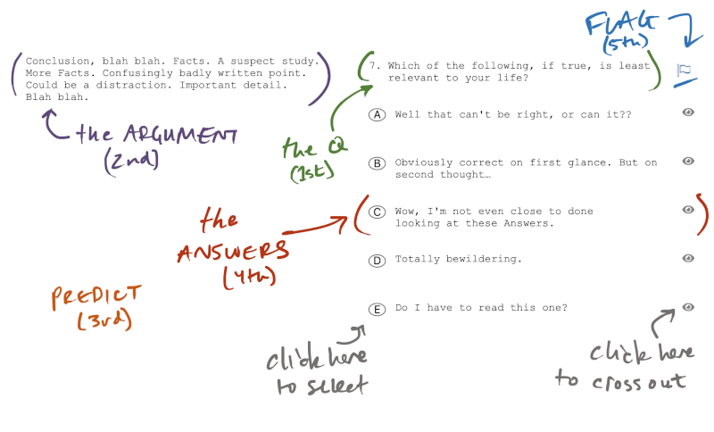

Reasoning Overview
Terminology note
The LSAT calls this section "Logical Reasoning," which many shorten to "LR."
In the Reasoning section you'll be given about 25 short arguments and asked one question about each.
To answer these Reasoning questions, you'll do the same 5 basic steps every time:
Here's where those 5 steps happen in an example Reasoning question:

Step 1: Get a job
Your first step is to read the question, meaning the line that ends with a "?"
The question gives you a job to do. (It's useful to know what your job is before you start trying to do it.)
There are a limited number of jobs the LSAT will ask you to do.
Every question fits into one of three families: DESCRIBE, ARGUE, or INFER. The family tells you what to do with the argument.
Every question also has one of two styles: MECHANICAL or ORGANIC. The style tells you how to pay attention to the argument and what kind of prediction you can make.
Example
Which of the following most accurately describes the main point of the argument above?
This question is in the DESCRIBE family. You can tell because it says "describe." Your job on all DESCRIBE questions is to distinguish the argument's facts from it's conclusion. You won't have to argue with the argument.
All DESCRIBE questions are MECHANICAL in style because you can reliably make a specific prediction about what the answer will be. In this case, once you find the conclusion of the argument, you'll have a strong sense of what ideas you need to see in the correct answer.
Other guides might call this a "conclusion" question. But other than the specific instruction to find the conclusion, which you can read in the question, there's not much that distinguishes this from the rest of the DESCRIBE family. So I don't think it needs a special name.
What to expect from the DESCRIBE family
The argument has a conclusion and supporting facts. Your job is to break down the structure of the argument. You don't need to argue.
What to expect from the ARGUE family
The argument has at least one problem. Your job is to find that problem.
What to expect from the INFER family
The argument isn't actually an argument. They only give you facts.
How to approach the MECHANICAL style
Pay pedantic attention to every word of the argument. The argument may feature conditional logic.
Answers will follow closely from the argument. You can (and should) make a specific prediction.
How to approach the ORGANIC style
Pay holistic attention to the entire argument. To spot problems, it may be useful to ask yourself "What if?"
Answers can include new and surprising information. Your prediction needs to be flexible.
Some questions also have a specific type. Knowing the type gives you an even more specific job description.
Practice Tip: Memorize the families, styles, and types.
Save time and energy on test day by memorizing how to recognize and approach each family, style, and type of question.
Flash cards are a great tool for memorizing information about common questions.
Not all types are worth learning.
Other guides attempt to give you a complete list of every possible question type. And they give you much more to memorize about each question type.
In contrast, I offer the families and styles to simplify your knowledge. Knowing the family and style helps simplify in three ways:
- You don't have to memorize/track as much knowledge. Knowing family + style will be enough to guide you though most questions.
- You'll remain sensitive to the specific question that's being asked.
- You'll make more connections across question types, giving you more flexible tools.
Step 2: Understand the argument
Understanding the argument is the most important step. If you do not have a strong understanding of the argument, you will not be able to make a useful prediction and the answers will bamboozle you.
To understand the argument, you will need to...
- Break down the argument to separate the facts from the conclusion, and then
- Boil down the argument to its essential meaning.
Accept the facts
In contrast to how you argue in real life, on the LSAT you must accept that the facts are true. Instead of fighting the facts, you argue by showing that the facts do not support the conclusion. In other words you don't care about the real-world truth of the argument, you want to show that the argument is logically invalid.
Step 3: Predict
Pausing to make predictions is one of the best ways to gain speed and accuracy in the Reasoning section. Predictions help you stay grounded in your understanding so you can move confidently through the answers.
The type of prediction you should attempt to make depends on the question style:
| type of prediction | what you do | question style |
|---|---|---|
| 1. Anchor | paraphrase the argument | ALL (especially very easy and very hard questions) |
| 2. Flexible | identify the argument's problem (but not a specific solution to that problem) | ORGANIC |
| 3. Specific | anticipate the ideas that will be in the correct answer | MECHANICAL |
On ORGANIC questions the answers often include new information. To be prepared for these surprising answers, it's best to have a flexible prediction.
On MECHANICAL questions, answers won't include new information. In fact, the answers may look eerily similar. To avoid getting tangled up in the confusing answers, make specific predictions on MECHANICAL questions.
Sometimes the best prediction is a summary of what the argument said. These anchor predictions may be all you need for an easy question. Or they may be all you can reasonably expect of yourself on a hard question. At minimum, always make an anchor prediction.
Step 4: Eliminate, defer, or select
Once you have a prediction, you're ready for the answers.
On the digital LSAT, you can do one of three (useful) things to any given answer:
| Option | When the answer is... | What to click |
|---|---|---|
| Eliminate | Poisoned, aka you know why it's bad | The button on the right side to cross it out. |
| Defer | Weird, aka you aren't sure | Nothing. |
| Select | The least bad one left, or you love it | The button on the left side, which should turn green. |
Waffling 
Deferring is not "waffling." Waffling is a waste of time. When you waffle, you avoid deciding. When you defer, you decisively choose to make a decision later.
Step 5: Move on or revise
Ideally, you don't need this 5th step. But let's be realistic. You won't always be able to make 4 confident eliminations. Sometimes you'll make 5 eliminations. And sometimes you'll only be able to eliminate 2 or 3 answers. You need a plan for these moments.
To start, click the little flag button in the top right. You just proved that this is a hard question that you could review later.
Then reset. Take a quick breath to get your head back in the game.
From there, you have options. You can either:
- Move on to the next question.
- Revise your understanding of the argument.
Moving on may feel lame, but it's one of the best ways to save time in the Reasoning section. And with those time savings you can potentially come back later when you have a fresh perspective.
If you do choose to revise, then you need to look back at the argument with fresh eyes. Something about the way you understood the argument the first time was wrong.
You're more likely to be confused about the argument than the answers
There's always the chance that you misread an answer. Usually, however, struggling on a question means you missed something in argument. When you have a strong understanding and the correct level of prediction, the answers will typically feel easier.